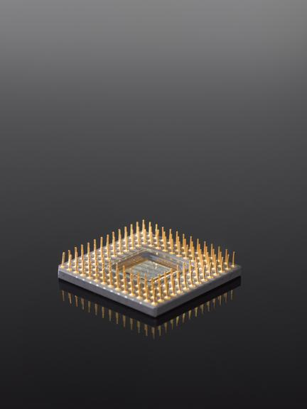
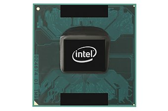
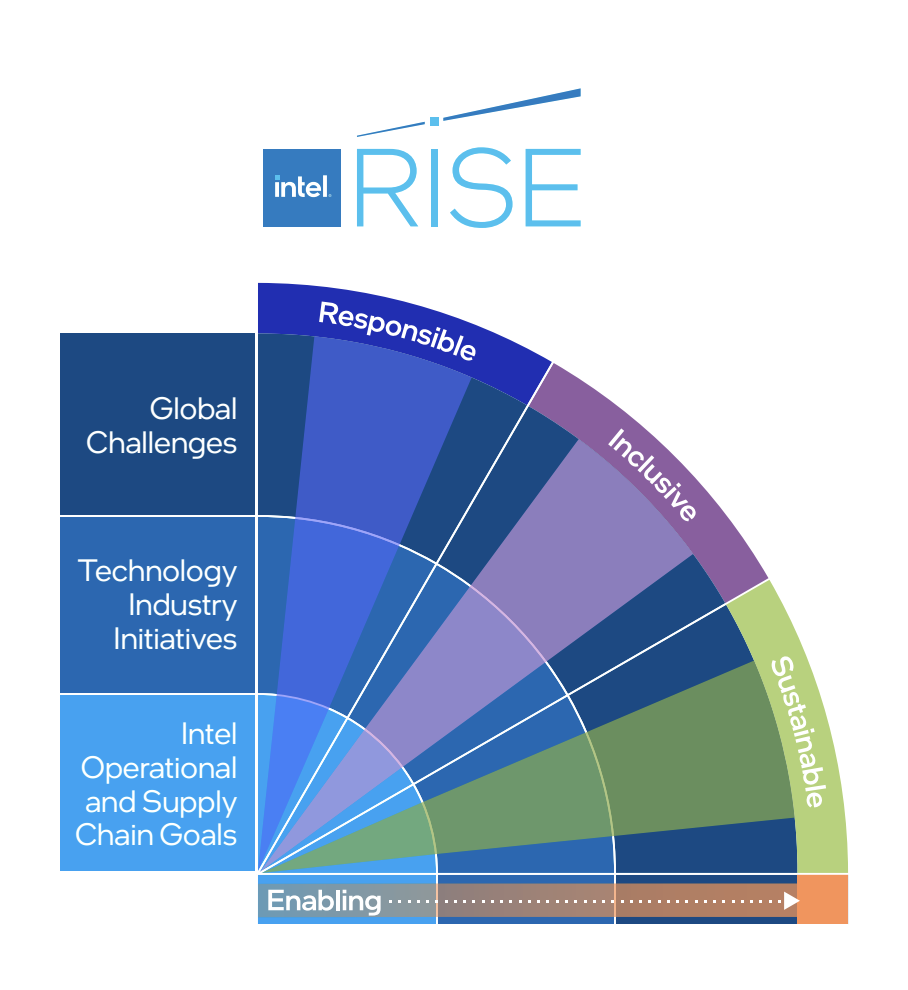

1968
Intel Founded

1968
Intel is founded, beginning a journey of technological innovation that would influence computing around the world.
Explore Intel's journey through time, discovering how innovation has shaped a more sustainable future for technology and our planet.
1968
Intel is founded, beginning a journey of technological innovation that would influence computing around the world.
1971

Intel introduces the 4004, one of the first commercially available microprocessors and an important milestone in modern computing.
1978

Intel introduces the 8086 processor, helping establish an architecture that would influence personal computing for decades.
1985

The Intel 386 processor brings 32-bit computing and creates new possibilities for performance and multitasking.
2003

Intel continues developing more energy-efficient technology while exploring ways to reduce the environmental impact of computing.
2020

Intel expands its commitment to responsible, inclusive and sustainable practices through long-term environmental goals.
2030

Intel continues working toward goals involving renewable energy, water conservation, waste reduction and more sustainable technology.
Scroll to view timeline | Hover over cards to learn more!